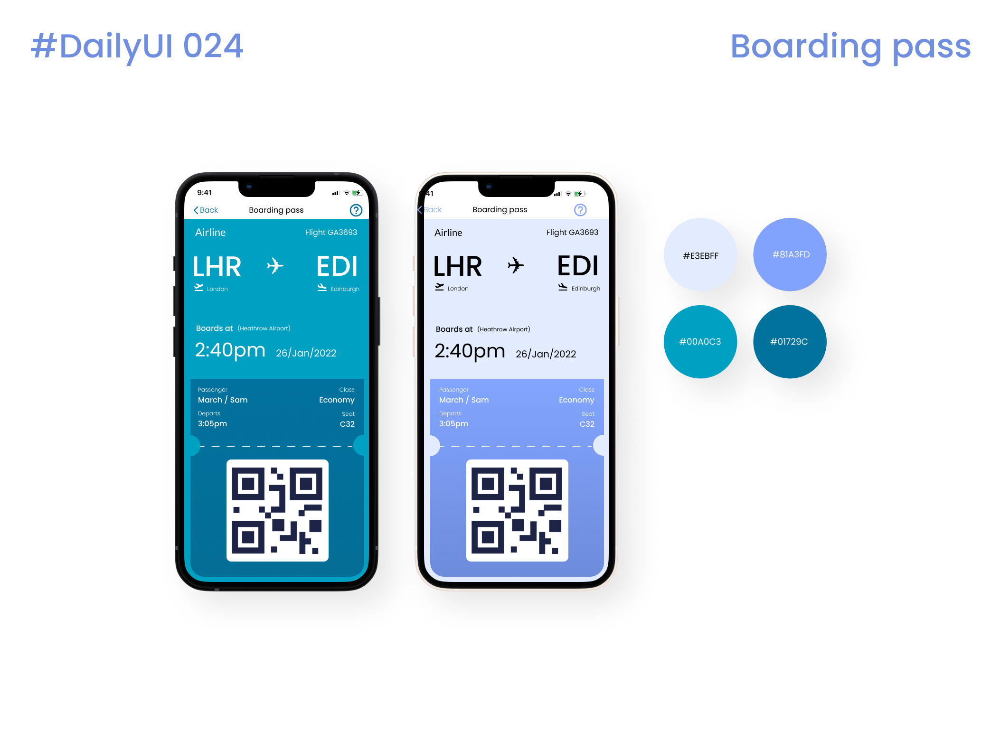

Year Two - User Experience Design 😎
September 2021
First trimester :
September 2021 (Hybrid studying)
Express through UX
- Module focused on UX desing, I really enjoyed learning about UX metodologies and conductiong interviews with users.
Digital Video Development
- On this module me and my collegues created opening sequence for out movie, it was fun and I learned a lot about light and video.
Practical Interaction design
- I really enjoyed this module, we were asked to design sustainable application for mobile and create working prototype using Figma software.
Winter break
I followed UI challenge and for 5 weeks did UI designs.

Second trimester :
January 2022 (Mostly on campus studying)
Web Technologies
- n this module we’re going to break down our existing web skills, fill in any gaps we identify, and then reassemble everything into a robust and extensible toolkit for building, using, and exploiting web-based technologies.
Playful Interaction
- On this module we will explore arduino and create interactive project by the end of the year.
Information Interactions
- This module has a focus on online Information Interactions between user, system, and content. From content perspective, students will explore the design and development of web space content design, the placement and use of information to convey messages and how Online Search Engines utilise and present this information.